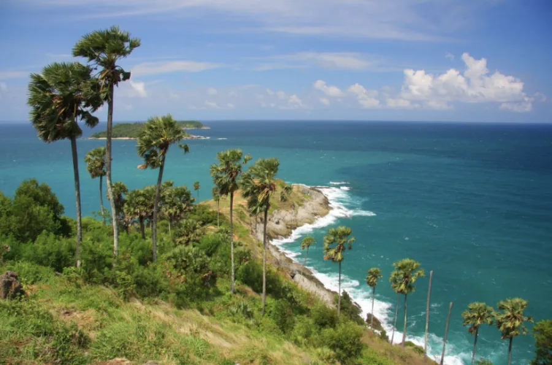

ใหม่
ทะเลแหวก · เกาะปอดะ · ไร่เลย์ กระบี่
เที่ยวเกาะกระบี่แบบวันเดย์ทริป เดินสันทรายทะเลแหวกที่เชื่อมเกาะยามน้ำลด ดำน้ำตื้นที่เกาะปอดะ และชมหน้าผาหินปูนชื่อดังที่ไร่เลย์
สอบถามราคา
สอบถาม
ผู้เชี่ยวชาญการเที่ยวภูเก็ตโดยคนท้องถิ่น
ภูเก็ตไม่ได้มีแค่ทะเล
ตั้งแต่ภูเก็ต พังงา เขาหลัก เขาสก เกาะพีพี ไปจนถึงหมู่เกาะสิมิลัน สัมผัสอันดามันในมุมที่คนท้องถิ่นรู้จัก ผ่านเส้นทางและประสบการณ์ที่คัดสรรให้เหมาะกับสไตล์การเดินทางของคุณ
เลือกตามสไตล์ที่ชอบ
ตั้งแต่เกาะระดับโลกไปจนถึงตรอกเมืองเก่าที่คนภูเก็ตกินกันเอง เลือกหมวดที่อยากไปได้เลย
ทัวร์และกิจกรรมทั้งหมด
เที่ยวเกาะกระบี่แบบวันเดย์ทริป เดินสันทรายทะเลแหวกที่เชื่อมเกาะยามน้ำลด ดำน้ำตื้นที่เกาะปอดะ และชมหน้าผาหินปูนชื่อดังที่ไร่เลย์

ดำน้ำตื้นชมปะการังน้ำตื้นที่สมบูรณ์ที่สุดแห่งหนึ่งของไทย พักผ่อนบนหาดทรายขาวน้ำใส และเยี่ยมชมหมู่บ้านชาวเลมอร์แกน

ล่องเรือสู่เกาะห้อง กระบี่ เล่นน้ำและดำน้ำตื้นในลากูนสีเขียวมรกตที่เงียบสงบ พักผ่อนบนหาดทรายขาว และชมหน้าผาหินปูนสูงตระหง่านในเขตอุทยานฯ ธารโบกขรณี

พายเรือแคนูในถ้ำลอด ชมเขาตะปู แวะเกาะปันหยี หมู่บ้านกลางน้ำ เลือกได้ทั้งสปีดโบ๊ทและเรือใหญ่

หาดทรายขาวน้ำใสที่ใกล้ภูเก็ตที่สุด เหมาะกับครอบครัวและมือใหม่ดำน้ำตื้น เลือกเรือคาตามารันหรือสปีดโบ๊ท

ทริปเต็มวันถึงค่ำ ดำน้ำตื้นหลายจุด ดูพระอาทิตย์ตกกลางทะเล ปิดท้ายด้วยแพลงก์ตอนเรืองแสงในน้ำ

น้ำใสระดับโลก ดำน้ำตื้นจุดยอดนิยม ขึ้นจุดชมวิวเกาะแปด อุทยานเปิดเฉพาะ ต.ค.–พ.ค. ควรจองล่วงหน้า
ขับเจ็ตสกีเองข้าม 8 เกาะรอบภูเก็ตพร้อมไกด์นำขบวน 5 ชั่วโมงเต็ม รวมประกันและอุปกรณ์ครบ
ไม่ต้องมีใบอนุญาต ครูฝึกดูแลหนึ่งต่อสอง ลงจริงที่จุดปะการังรอบเกาะราชา รวมอุปกรณ์และรูปใต้น้ำ
พาราเซลลิ่ง บานาน่าโบ๊ท และซีวอล์กเกอร์ เลือกเล่นแยกชิ้นหรือรวมแพ็ก จองผ่านเราได้ราคาเดียวกับหน้าหาดแต่ไม่ต้องต่อรอง
แพ็กคู่ยอดนิยมสำหรับสายผจญภัย ล่องแก่งระยะ 5 กิโลเมตร ต่อด้วยซิปไลน์ข้ามหุบเขา รวมรถรับส่งและอาหารกลางวัน

ขับ ATV เองบนเส้นทางดินในสวนยางและป่าเขา จบที่จุดชมวิวเห็นทะเลอันดามันเต็มตา เลือกได้ 1 หรือ 2 ชั่วโมง
เลือกจำนวนฐานได้ตามความกล้า ตั้งแต่คอร์สสั้นสำหรับมือใหม่ถึงคอร์สเต็มพร้อมสะพานเชือกและกำแพงปีน
เลือกได้ทั้งแบบเยี่ยมชมและให้อาหาร อาบน้ำช้าง หรือว่ายน้ำกับช้าง เราเลือกแคมป์ที่ดูแลช้างดีให้เท่านั้น

โชว์วัฒนธรรมไทยระดับโลกพร้อมช้างและเทคนิคเวทีอลังการ รอบ 21:00 น. ใช้เวลา 70 นาที เลือกเพิ่มบุฟเฟต์ได้
ธีมพาร์กแสงสีที่ใหม่ที่สุดของภูเก็ต ขบวนพาเหรดและโชว์บนเวทีใหญ่ รอบ 20:30 น. ความยาว 1 ชั่วโมง
คาบาเรต์โชว์ที่ดังที่สุดของภูเก็ต มีรอบทุกวัน เลือกที่นั่ง VIP ใกล้เวทีหรือที่นั่งปกติได้
โชว์โลมาในโรงละครในร่ม เหมาะกับครอบครัวที่มีเด็กเล็ก มีหลายรอบต่อวัน ปิดทุกวันจันทร์

โชว์ศิลปวัฒนธรรมไทยบนเวทีขนาดใหญ่ พร้อมหมู่บ้านไทยให้เดินชมก่อนเข้าโรงละคร เลือกเพิ่มบุฟเฟต์มื้อเย็นได้
เดินเมืองเก่ากับไกด์ที่โตที่นี่ กินหมี่หุ้นร้านที่คนภูเก็ตต่อคิว ฟังเรื่องตึกชิโนฯ จบที่ร้านกาแฟในบ้านเก่า
ตื่นเช้าไปตลาดที่คนภูเก็ตซื้อของกินเอง ต่อด้วยหมู่บ้านชาวเลราไวย์ ฟังเรื่องจากคนในชุมชนโดยตรง
คนขับถือป้ายชื่อรอที่ประตูผู้โดยสารขาเข้า ราคาเหมาต่อคันไม่คิดต่อหัว เลือกรถเก๋ง รถตู้ หรือรถตู้ใหญ่
ตั๋วเรือไปพีพี ลันตา และเกาะใกล้เคียง เลือกเฟอร์รี่แบบประหยัดหรือสปีดโบ๊ทแบบเร็ว รวมรถรับที่โรงแรมได้
เรารับจองตั๋วเครื่องบินทั้งในและต่างประเทศ แจ้งวันเดินทางทาง LINE เดี๋ยวเราจัดให้ — บริการนี้ให้บริการผ่านแชทเท่านั้น
Beyond the Shore
ทัวร์เกาะสวย ๆ ใครก็พาไปได้ แต่สิ่งที่เราทำได้คนเดียวคือ ภูเก็ตในมุมของคนท้องถิ่น ตลาดเช้าที่ปิดสิบโมง ร้านโกปี๊ที่ไม่มีป้ายภาษาอังกฤษ และหมู่บ้านชาวเลราไวย์ที่เรือกลับเข้าฝั่งตอนเช้า
5 ประสบการณ์
สัมผัสทั้งธรรมชาติ วัฒนธรรม อาหาร และ Hidden Gems ของภูเก็ต ทุกประสบการณ์คัดสรรและนำเที่ยวโดย Local Expert ที่อาศัยและรู้จักภูเก็ตเป็นอย่างดี
เดินเที่ยวชมเมืองเก่าภูเก็ต ชมสถาปัตยกรรมชิโน-โปรตุกีส คาเฟ่ และร้านอาหารท้องถิ่น

เดินป่าชมวิวทะเลอันดามัน ผ่านเส้นทางธรรมชาติและจุดชมวิวที่สวยงาม
พาไปค้นพบสถานที่สวย ๆ ที่อยู่นอกเส้นทางท่องเที่ยวทั่วไป โดย Local Expert
ทำไมต้องเดินทางกับเรา
ออฟฟิศจริงที่ป่าตอง เราคัดผู้ให้บริการเอง ลงเรือเอง และรู้ว่าวันไหนทะเลไม่สวย
ทำงานกับเจ้าของเรือโดยตรง เช็ก stock จริงก่อนเสมอ ไม่มีค่าคนกลางซ้อนและไม่เลื่อนหน้างาน
คุยกับทีมเดิมตั้งแต่สอบถามจนกลับถึงโรงแรม มีปัญหาหน้างานเราไปถึงได้จริง
Real Phuket Moments
เสียงจากผู้เดินทาง